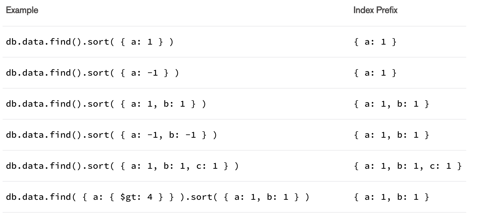
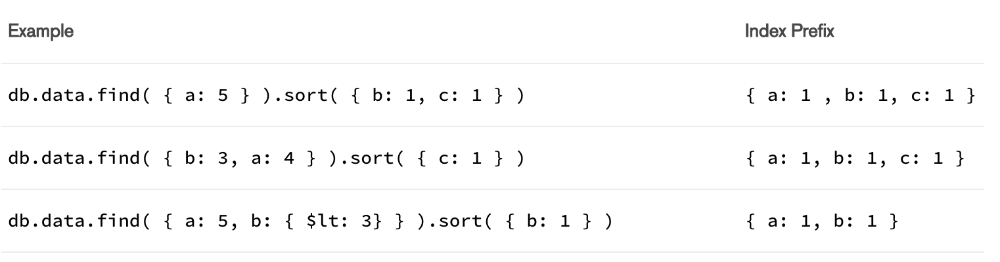
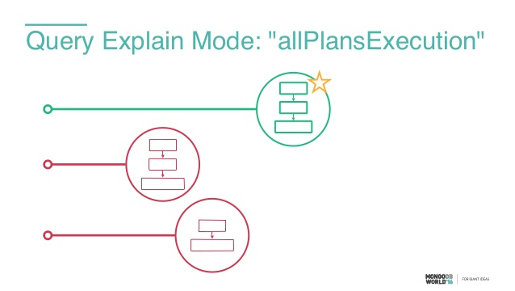

Indexes support execution of queries
- find / findOne / findAndModify
- update / updateMany / updateOne
- deleteMany / deleteOne
- aggregation pipeline
db.collection.createIndex(keys, options)
-
keys:
- { field: -1 }
- { field.subfield: -1 }
-
options:
- { background: true }
index creation mode
- foreground: block whole database for read and write
- foreground: much faster
- for big dataset it make sense to do rolling index build
- can be created over maintenance window
- use background on production
single field index
- sort order doesn't metter
- { field: 1 }
- { 'complexfield.subfield': -1 }
- { subdocument: -1 }
{
field: "asd",
complexfield: {
subfield: 123
},
subdocument: {
name: "asd",
test: 312
}
}
compound index
- order of field really metter
-
{ name: -1, city: 1 }
{ city: 1, name: -1 } - backward direction for sorting
-
{ a: -1, b: 1, c: -1 }
{ a: 1, b: -1, c: 1 } - can be used for filter + sort
index prefixes
- this index { a: 1, b: 1, c: 1 }
- support { a: 1 } query
- support { a: 1, b: 1 } query
- support { a: 1, b: 1, c: 1 } query
- *support { a: 1, c: 1 } query
- don't support { b: 1 } query
- don't support { b: 1, c: 1 } query
Sort and Index Prefix
db.data.createIndex( { a:1, b: 1, c: 1, d: 1 } )

Sort and Non-prefix Subset of an Index
db.data.createIndex( { a:1, b: 1, c: 1, d: 1 } )

Index Intersection
{ qty: 1 }
{ item: 1 }
db.orders.find( { item: "abc123", qty: { $gt: 15 } } )
{ status: 1, ord_date: -1 } // compound
db.orders.find( { status: { $in: ["A", "P" ] } } )
db.orders.find(
{
ord_date: { $gt: new Date("2014-02-01") },
status: {$in:[ "P", "A" ] }
}
)
db.orders.find( { ord_date: { $gt: new Date("2014-02-01") } } )
db.orders.find( { } ).sort( { ord_date: 1 } )
// these two support all queries
// individually or through index intersection
{ status: 1 }
{ ord_date: -1 }
Multikey index
- field value is an array
- MongoDB automatically figure out this
- multikey + compound -> only one array
Geospatial index
- geo 2dsphere indexes
Text index
- Full text search indexes
indexes properties
- { unique: true }
- { partialFilterExpression: { rating: { $gt: 5 } } }
- { sparse: true }
- { expireAfterSeconds: 3600 }
- { collation: { locale: "fr" } }
Covered queries
{ status: 1, name: 1 }
db.data.find({ status: { $gt: 1 } }, { status: 1, name: 1 })
Index selection

Index should be fit in RAM

Index in aggregation
- not all stages support indexes
- when you break a chain, mongo will not use indexes anymore
- put $match, $sort, $limit in the beginning
Index explain
- executionTimeMillis
- nReturned
- totalDocsExamined
- totalKeysExamined
- NO COLLSCAN
- NO SORT_KEY_GENERATOR (in memory sort)
case study
Equality, Sort, Range
indexes management
- getIndexes
- dropIndex / dropIndexes
- collection.stats
- collection.aggregate([ { $indexStats: { } }])
Q&A